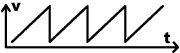
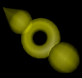
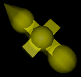

Multiply & Add

Multiply (add) the values at the value in connectors.
Modulo

Let v1 and v2 be the values at the first and the second value
in connectors, then this module performs the following calculation:
v1 - floor (v1 / v2) * v2
That is basically the idea of the integer modulo operation transfered
to floating point values.
A quite simple operation but not that easy to explain. Maybe
the following image helps:
Basically, the oparator maps the input values v1 to the range
[0,v2) by cutting and downscaling the input/output-graph at multiplicants
of v2.
For example: If v2 equals 1, you get values in the range [0,1)
consisting of the floating point digits of v1.
Invert
Inverts values from a certain range.
This module simply subtracts it's input from 1 if it lies in
it's active range.
For example, you could change the sawtooth pattern of a modulator's
output to a triangular one by inverting values in the range [0.5,
1.0] and afterwards multiplying them by 2:

the original curve
after inverting values in the range [0.5, 1.0]
after multiplying by 2
Attack & Decay

These modules map values from a certain range to the range [0.0,
1.0] (attack) or [1.0, 0.0] (decay). If the smooth mode is activated,
the resulting curve has a sinus shaped slope.
For example:
the original curve
after applying a smooth decay in the range [0.5, 1.0]
after applying a smooth attack in the range [0.0, 0.5]
Switch
The switch module toggles between it's two input values
every time when the value at it's third input is smaller than
the last value.
This module is especially useful in conjunction with a trigger
module.
Random

Generates random values in the range [0,1] if the value in connector
is unconnected.
If connected, it generates a random value every time when the
input value is smaller than the last input value and interpolates
between the new and the old random value otherwise.
Accu

Accumulates the values at it's value in connector. The
second value in connector may be used to reset the accumulation
buffer.
If the increment switch in the inspector is deactivated, it subtracts
the values from it's buffer.
If you exchange input and output in the explanation
graph for the modulo module, you might get an idea, of what
this module is doing.
|